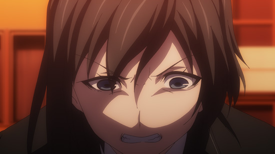
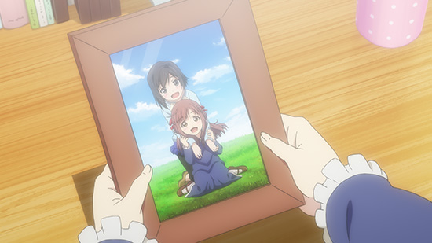

「Lostorage incited WIXOSS」
Column of episode 05
So, today we've posted episode 5's column. Do you have any memories you'd rather forget?
Notice of Friendship Failure

Last time she ripped off the strap, and this time followed it up with the combo move of stomping it.
It's as if she used a triple crush when there were only two Life Cloth left.
We mentioned it in previous columns, but this isn't Wixoss's fault.
It's the same as saying that crime is not born of the food one eats. {TL Note: I'm serious, this is some weird saying I can't find anywhere}
Playing the card game can help you find other Selector friends, so please don't worry and give it a try.

Both of them had large presences in each others memories, though for Chinatsu they were restraints, and to Suzuko they were her hope.
I'm sure that there are many more people who can't quite seem to be on the same page.
I wonder if you readers have also made memories throughout your lives that you never want to lose.
Please think about which of those are most important to you just in case.
One can only wonder what those memories are for Hanna.
Hanna takes notes for an eventuality of facing Chinatsu. It looks like she's organizing her Arts too. I wonder what "Never End" does.
The Pure-hearted Soccer Boy, Shirai Shouhei
He has no interest in lewd books.
He likely picked up a new card game due to his love of battles.
But he has memories he can't afford to lose, about soccer and...
All battles must have a victor and a loser.
Each side gains and loses, and the story takes another step forward.
The card game he chose was no game.
But even if you don't battle, the fact that the borderline between "victory" and "defeat" will follow you throughout life will not change.
Although usually people decide where that borderline is themselves for the most part.
This is Dona. She was born from Shou-chan's memories.
Starting in WX16, Dona's specialty Oddities will be opened.
You can see an example of their Layer ability with the below "Karaten".
She has two separate Layer abilities. Even playing one of her will fortify your field greatly.
When did you experience your own "youth"?
A youth of having the soccer club manager hand you a towel that made your heart skip a beat. Did you ever experience something like that? Just so you know, I've never had anything like that happen even though I just wrote about it. I'm also long past those times, so it'll never happen.
If that kind of situation were to happen with a card game, it might go something like this: "You can use this token if you want (silence)". It's too bad that not many schools have a card game club. If you're part of one, please share your heart-skipping moments with me.
Hanna and Suzuko's Battle
Got me a Hanna-chan pic
The both of them had registered with Satomi the Bookmaker.
Perhaps he booked them a match together half-jokingly.
Lucky! So excite
Suzuko cannot escape. She Opens.
Hanna speaks to the hesitant Suzuko.
"Battles are to be fought for oneself."
Now then, on to the battle.
Hanna-chan uses a Nanashi deck with Virus cards. Her class is Natural Bacteria, and the theme is bacteria old and new, plus viruses. By the way, bacteria and viruses are slightly different lifeforms. For example, bacteria are 50x the size of viruses. But you probably don't care.
Starting with WX16, let's Open with Nanashi's Natural Bacteria cards together.
Natural Bacteria decks have many Virus cards that can cause a state of "infection".
Nanashi Level 4 has a constant ability that makes use of Viruses.
And that Nanashi-chan deck goes on sale November 17th (Thurs)!
It will undoubtedly make your own Nanashi-chan decks stronger!

As the game progresses, Hanna is surprised by one of the moves. When she thought she understood Valor class decks, suddenly out came Natural Star Princess, Garnet Star!"
I wonder if she was happy to pull an SR card after buying an Incited Selector pack. She even realized the great potential of combining it with the triple crush of Odanobu. I'm excited to see how much better Suzu-chan will get.

But then she messed up the wording of Honest and was skillfully outdone.
Hanna had previously figured out what cards were in her Life Cloth by using a deck search.
Of course she'd be able to avoid answering "no" to the question of "do you have a trap".
Suzuko lost, her wavering heart crushed even more.
Keep in mind that there were two Oigona and three Viruses on the field.
She really had nowhere to run either way.
It might not have been the best decision to rely on some power.
It's like wondering if you'll win the lottery. You have the most fun when you're imagining what you'll do afterwards.
Starting a new part-time job!
So, how did you enjoy episode 5?
Chinatsu-chan was fired from her previous job, so it looks like she's started a new one.
I'll take the job offer.
Who could be on the other end of the line?
A diner with a waitress who carries a katana?
A coffee shop filled with rabbits?
A game development company that only employs girls?
Or perhaps...?
Just so you know, 80% of column is written off the cuff. Please don't take it seriously.
Now then, look forward to episode 6!
Card Game Special Live Nico Stream
We've been revealing the cards little by little, but we'll be fully releasing the next Wixoss line on December 15th (Thurs).
The first is "Mama" and "Dona", along with other Lostorage incited WIXOSS LRIG additions in
"Decided Selector"
The other is the "Mama" deck
"Green Cunning".
Now for an announcement!
On November 18th (Fri), we're going to be on Nico Nico Live Broadcasting on Card Gamer's channel to show off the Nanashi deck and the anniversary lottery! (We haven't fully recovered the Takara Tomy live booth yet)
We'll be introducing new cards from the above packs along with event news, and showing you a sample game with Mama's Green Cunning deck! Plus... Homura Suzuko's VA Hashimoto Chinami will be there!
Please check it out!